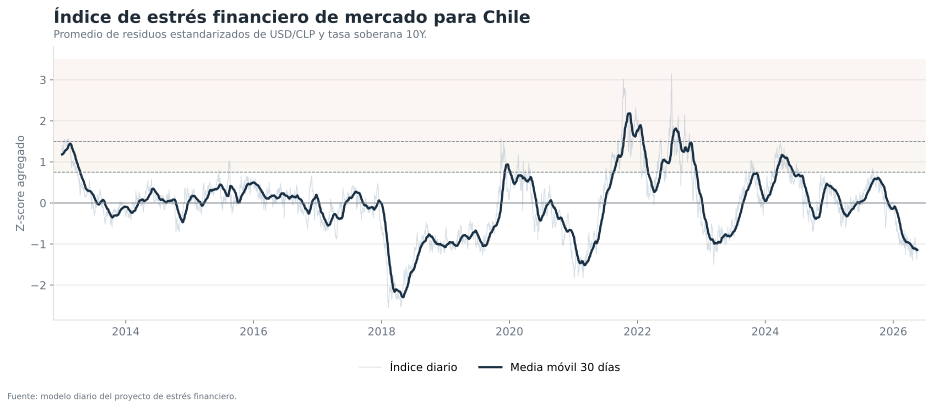
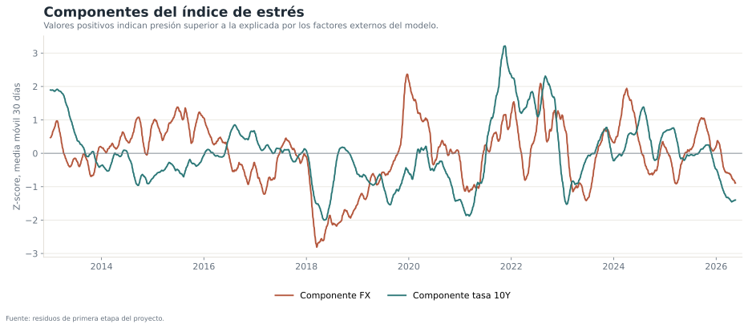
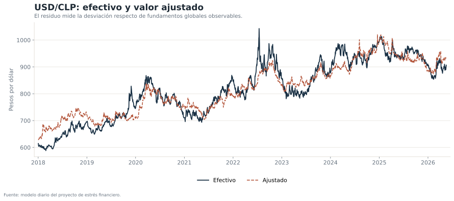
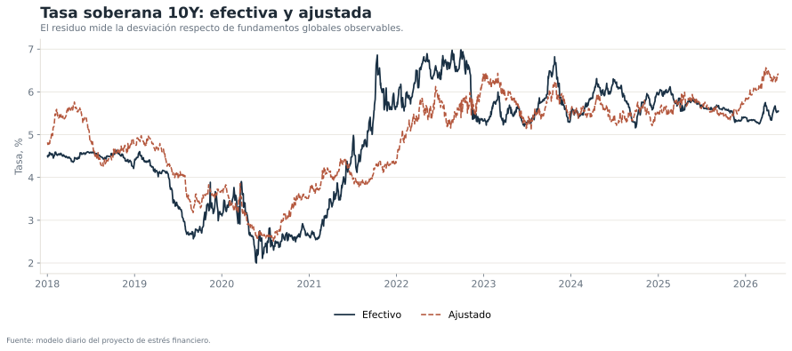

Qué mide el índice
El objetivo es separar dos dimensiones que suelen mezclarse en la discusión de mercado:
- Movimientos del USD/CLP y de la tasa soberana 10Y que pueden asociarse a factores globales observables.
- Desvíos específicos de Chile respecto de esos fundamentos.
El índice combina los residuos estandarizados de ambos mercados. Un valor positivo indica presión superior a la predicha por el modelo; uno negativo indica condiciones más benignas que la referencia histórica condicional.
Resultado principal


Modelos de primera etapa
El bloque cambiario utiliza tendencia, IPC relativo Chile–Estados Unidos, cobre, petróleo, VIX, índice amplio del dólar, CNY y mercados accionarios. El bloque de tasa larga incorpora Treasury 10Y, VIX, dólar global, CNY y acciones.


Construcción del indicador
La clasificación de régimen utiliza umbrales simples sobre la media móvil de 30 días. Es una herramienta de monitoreo, no una probabilidad de crisis.
Diagnóstico de ajuste
| Bloque | N | R² | R² ajustado | Inicio | Fin | σ residuo |
|---|---|---|---|---|---|---|
| Tipo de cambio USD/CLP | 3385 | 0,959 | 0,959 | 2012-10-05 | 2026-05-18 | 0,040 |
| Tasa soberana 10Y CLP | 3386 | 0,660 | 0,659 | 2012-10-05 | 2026-05-18 | 0,595 |
El alto R² del modelo cambiario refleja una fuerte comovilidad con factores globales y tendencias en la muestra. No significa que el tipo de cambio esté “determinado” por el modelo ni que el residuo sea exclusivamente riesgo local.
Límites de interpretación
- Los residuos dependen de la especificación y de la ventana muestral.
- Un factor local omitido puede aparecer como estrés aunque no represente deterioro financiero amplio.
- Los z-scores no son comparables de manera mecánica entre modelos con volatilidades residuales distintas.
- El indicador no incorpora crédito, acciones locales, spreads corporativos ni liquidez.
- Los umbrales de régimen son descriptivos y no están calibrados a eventos de crisis oficiales.